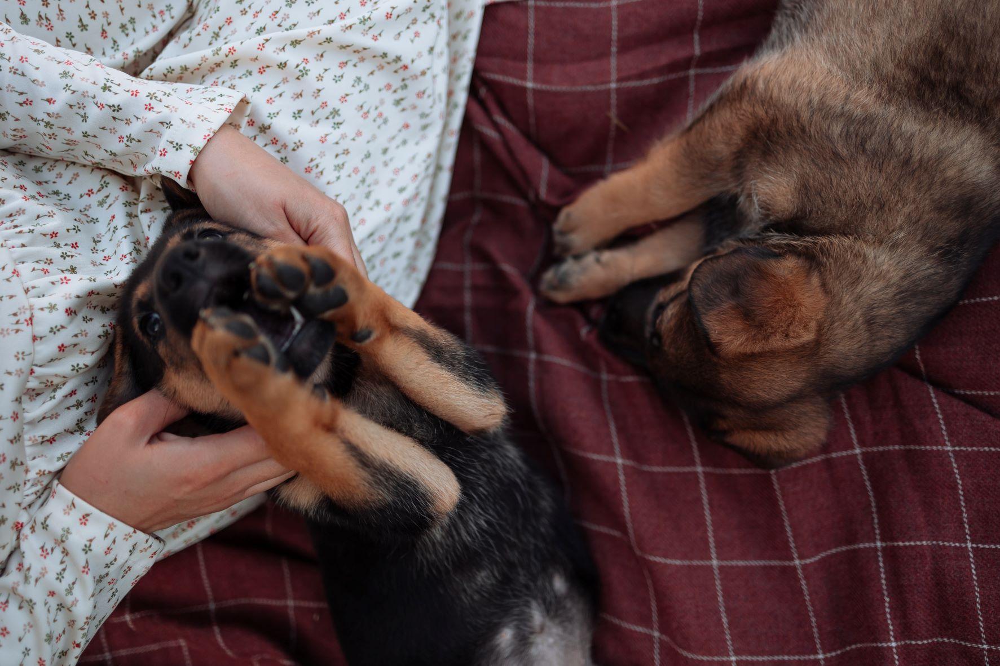
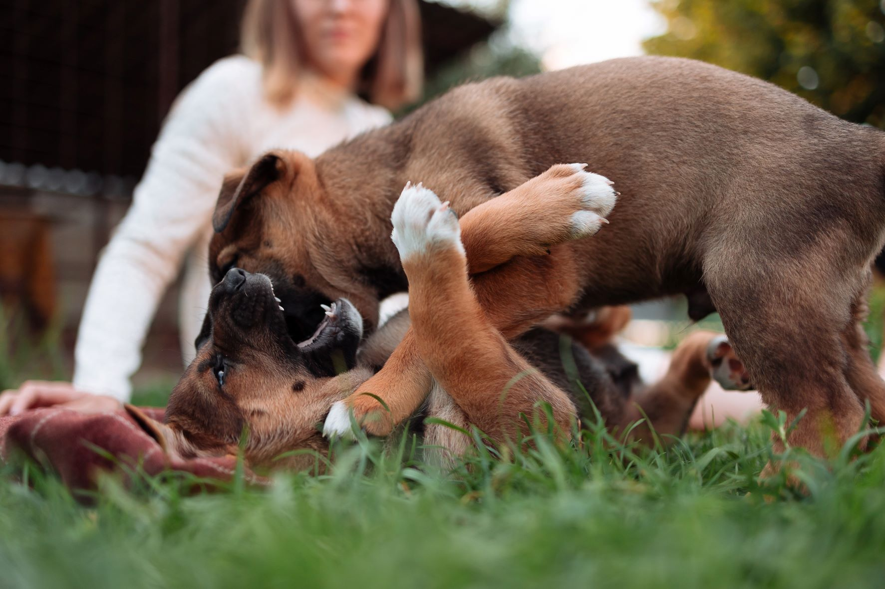

Un poco de nuestro día


Trabajamos por y para ellos.
"Adoptá Un Amigo" está compuesto por voluntarios que comparten el respeto por la vida de los animales y los consideran sus iguales siendo que estos tienen capacidad para sentir placer, alegría, dolor y sufrimiento.
Somos una organización sin fines de lucro liderada por un grupo de voluntarios que buscan superar la situación de sobrepoblación, abandono, crueldad e indiferencia que viven millones de animales en nuestro país.
Nuestra misión, es poder brindarles un hogar, y encontrarles dueños responsables a éstos animalitos. Realizamos diferentes campañas de concienciación en calle, prensa y centros educativos, para sensibilizar e informar sobre la realidad del abandono de animales en Argentina.
"Adoptá un Amigo Argentina" se encuentra debidamente registrada como asociación sin ánimo de lucro. No recibe ningún tipo de subvención pública, sustentándose únicamente con las aportaciones de personas y empresas que quieren colaborar con nosotros.
Trabajamos por y para ellos.